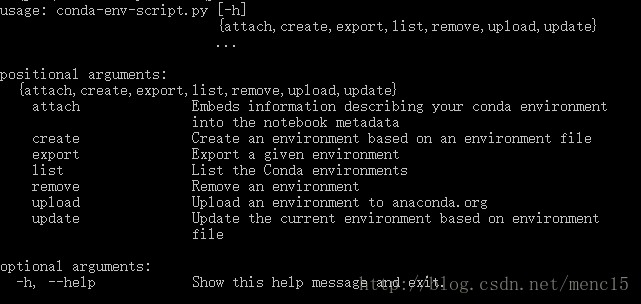
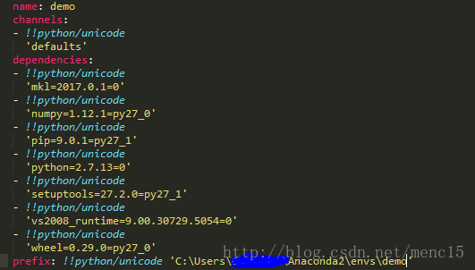

|
|
☰ 目录
20180824 conda 创建python版本主要参考Anaconda官方指南Using Conda：https://conda.io/docs/using/index.html 环境：Win10 64bit with conda 4.3.14 以下命令均在windows命令行中输入。一般来讲，无论是在Linux，OS X还是在windows系统中，在命令行窗口中输入的conda命令基本是一致的，除非有特别标注。 0.获取版本号或 1. 获取帮助查看某一命令的帮助，如update命令及remove命令 同理，以上命令中的 2.环境管理查看环境管理的全部命令帮助  创建环境 输入 创建制定python版本的环境 创建包含某些包的环境 创建指定python版本下包含某些包的环境 列举当前所有环境 进入某个环境 退出当前环境 复制某个环境 删除某个环境 3.分享环境如果你想把你当前的环境配置与别人分享，这样ta可以快速建立一个与你一模一样的环境（同一个版本的python及各种包）来共同开发/进行新的实验。一个分享环境的快速方法就是给ta一个你的环境的 首先通过 小伙伴拿到
 当然，你也可以手写一个 4.包管理列举当前活跃环境下的所有包 列举一个非当前活跃环境下的所有包 为指定环境安装某个包 如果不能通过conda install来安装，文档中提到可以从Anaconda.org安装，但我觉得会更习惯用pip直接安装。pip在Anaconda中已安装好，不需要单独为每个环境安装pip。如需要用pip管理包，activate环境后直接使用即可。 参考： https://blog.csdn.net/menc15/article/details/71477949/ |